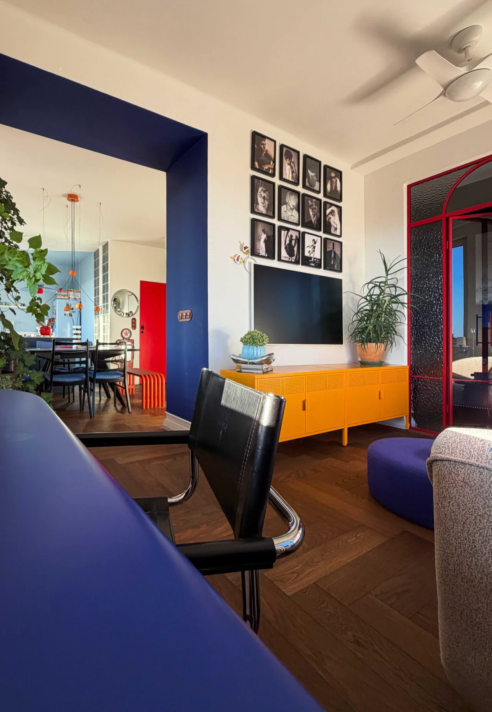
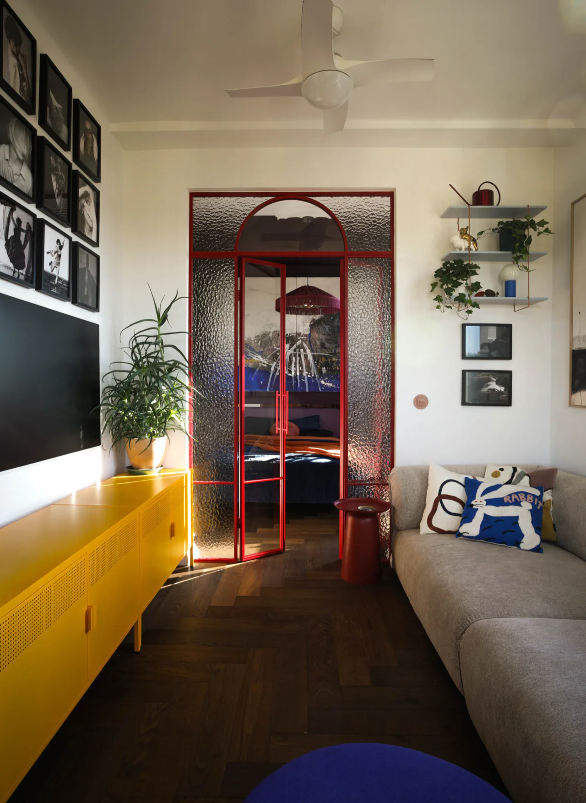
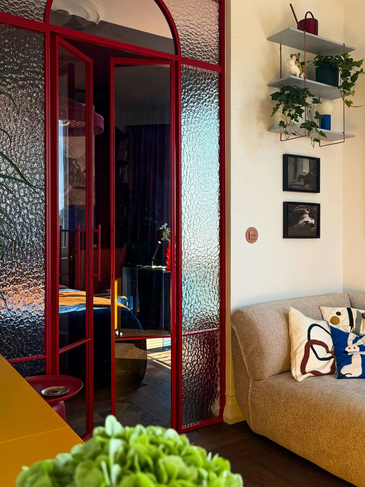
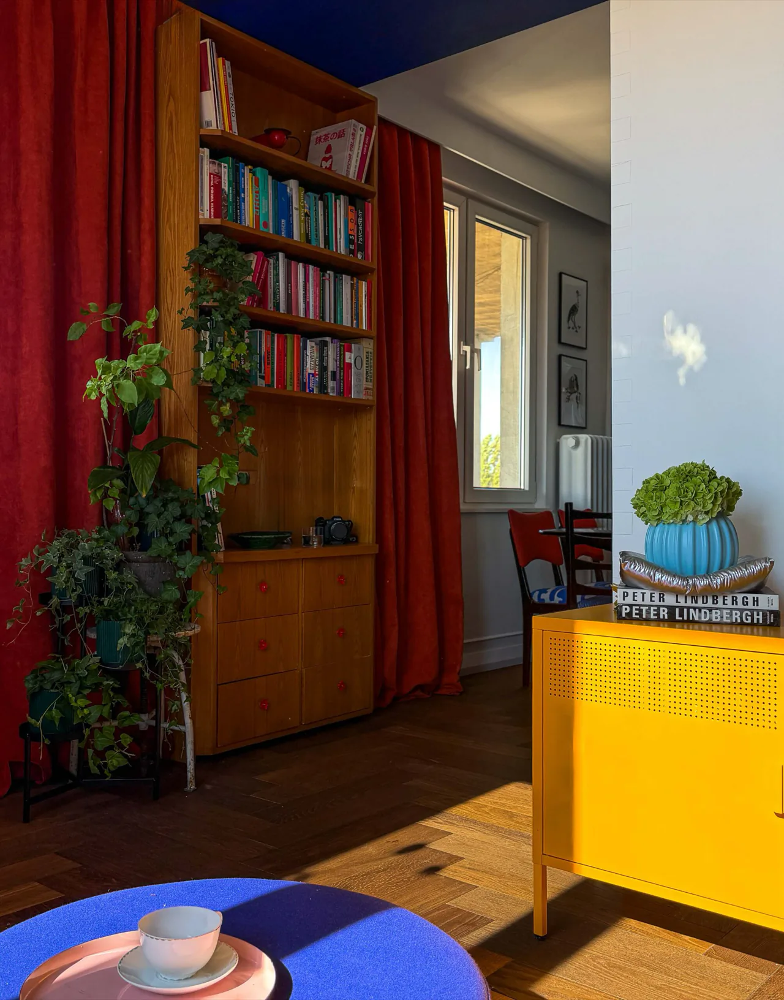
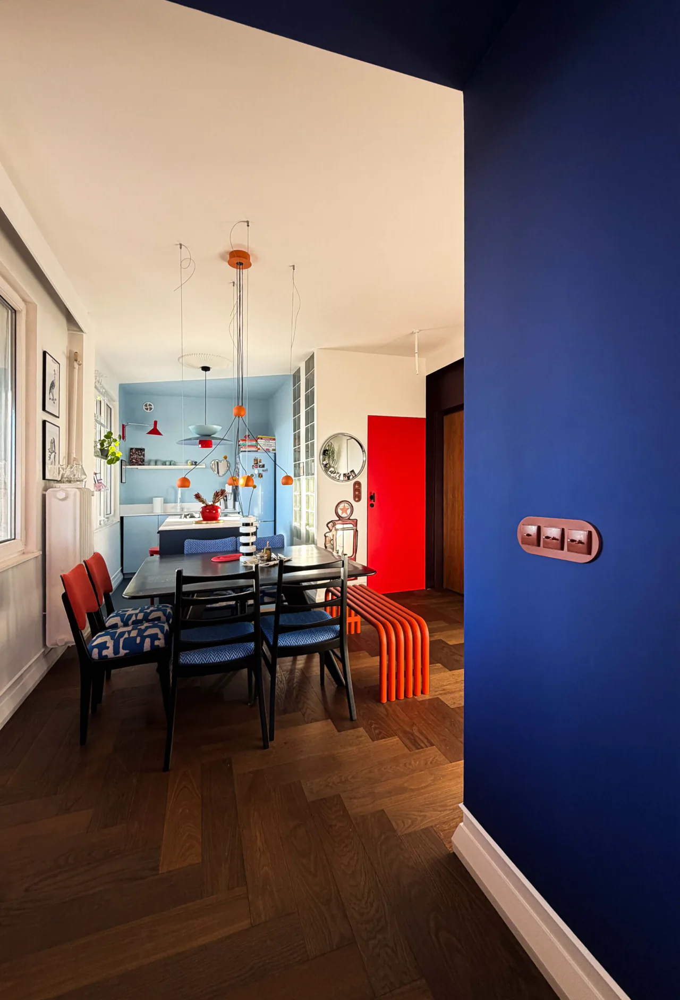
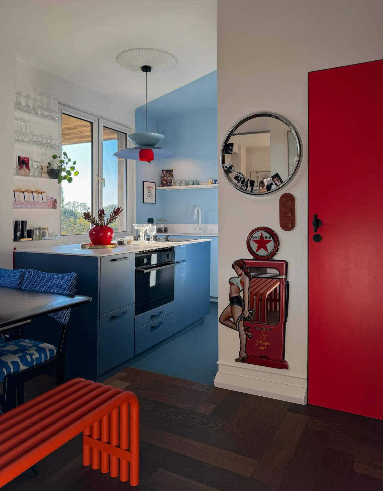
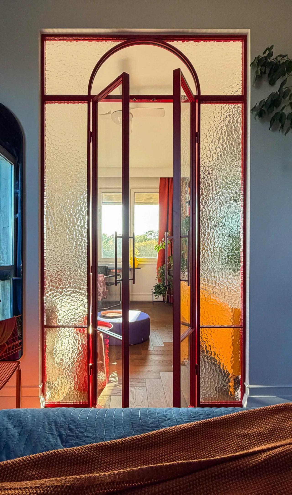
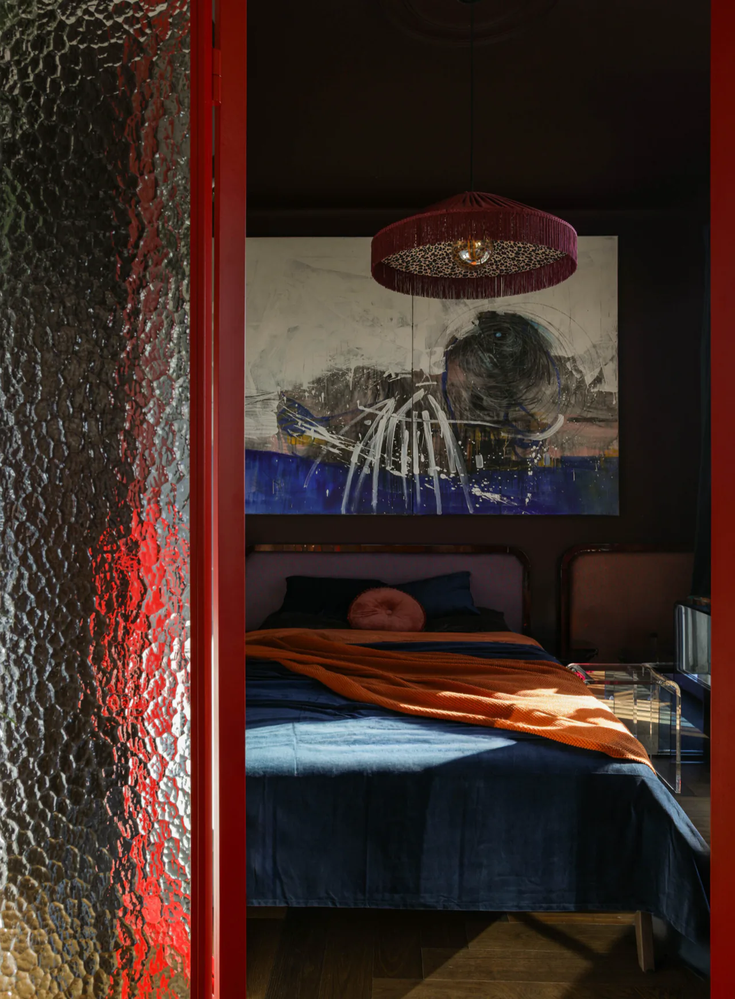
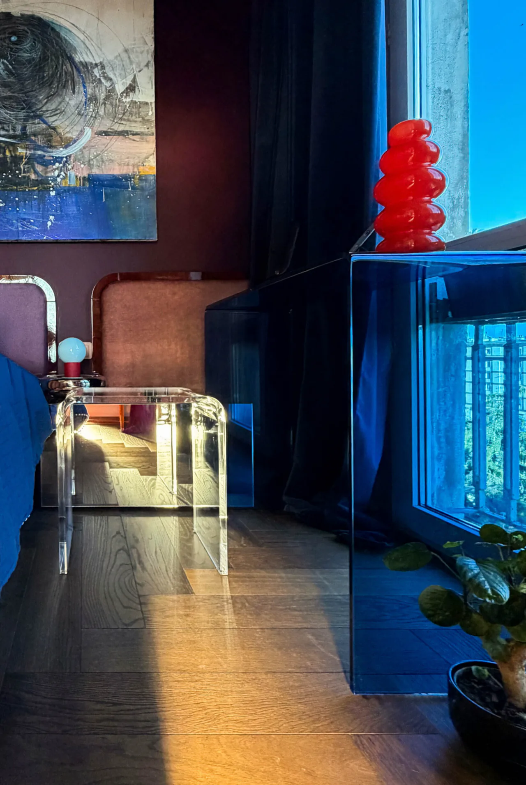
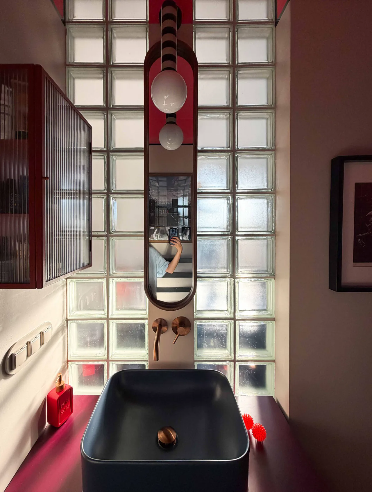

Wybór ekipy
Komu zaufać przy wykończeniu mieszkania?

Scena wygenerowana z użyciem AI

Wykończenie mieszkania pod klucz / Warszawa
Nie musisz szukać wykonawców, organizować dostaw ani codziennie sprawdzać postępów prac. Nasz zespół poprowadzi wykończenie od projektu do odbioru, a Ty podejmujesz najważniejsze decyzje z pomocą projektantki.
Umów bezpłatną konsultację
Wybór ekipy
Scena wygenerowana z użyciem AI
Czas i logistyka
Decyzje i jakość

Wyobraź sobie, że zamiast pilnować ekip, terminów dostaw i dziesiątek decyzji po prostu czekasz na swoje gotowe mieszkanie.
A my zajmujemy się całą resztą od projektu i wyboru materiałów, przez koordynację prac aż po ostatnie detale.
Umów bezpłatną konsultację Saska Kępa
Saska Kępa
Z całą odpowiedzialnością mogę polecić Pogotowie Wnętrzarskie dla osób ceniących sobie wysoką jakość usług projektowych i wykonawczych. Z racji tego, że jestem bardzo zapracowaną osobą wybrałem opcję przekazania firmie kluczy do mieszkania i ich odbiór po zakończeniu prac.
Jesteśmy bardzo zadowoleni ze współpracy. Pani Maria wysłuchała na czym nam zależy, dopasowała wnętrze do reszty mieszkania i budżetu w jakim chcemy się zamknąć. Mogę polecić z czystym sumieniem:)
 Katarzyna Jankowska5/5 · 3 miesiące temu · Pełna opinia
Katarzyna Jankowska5/5 · 3 miesiące temu · Pełna opiniaMiałam przyjemność współpracować z Pogotowiem Wnętrzarskim przy kapitalnym remoncie mojego 85-metrowego mieszkania . Jestem zachwycona efektem i wspólpracą. Uwielbiam moje mieszkanie po remoncie. Współpraca była świetna od samego początku. Dziewczyny zaprojektowały mi całe mieszkanie, włącznie ze zmianą układu ścian, elektryki, hydrauliki a także projektem każdego pomieszczenia oraz projektem mebli do zabudowy. Poleciły mi ekipę , która okazała się świetna i również polecam. Dziewczyny prowadziły nadzór nad przebiegiem całego remontu. Bez nich naprawdę nie dałabym rady. Ogromne wsparcie, wiedza i duża kreatywność. Zdjęcia mówią same za siebie.
 Monika Mendel5/5 · 3 lata temu · Pełna opinia
Monika Mendel5/5 · 3 lata temu · Pełna opiniaPogotowie Wnętrzarskie przeprowadziło u mnie remont generalny łazienki oraz odświeżenie i metamorfozę pozostałych pomieszczeń. Wszystkie elementy współpracy z Pogotowiem Wnętrzarskim przeszły moje wymagania i wyobrażenia!! Kontakt organizacyjny z p. Anią merytoryczny, życzliwy i uspokajający. Świetna ekipa remontowa w postaci p. Piotra i Jacka - fachowość w pracy, szerokie umiejętności, przy tym dużo życzliwości i dobrej woli. Z taką ekipą naprawde można odetchnąć spokojnie w niełatwym czasie remontu. Poza samym świetnym wykonaniem prac zdjęli ze mnie mnóstwo ciężaru służąc radami oraz przejmując częściowo kontakty ze spółdzielnią i innymi mieszkańcami budynku, kiedy mnie nie było na miejscu. Wzbudzili tym zresztą szczery entuzjazm moich sąsiadów :).
Projekt zaczyna się od potrzeb. Efektem jest przestrzeń dopasowana do tego, jak chcesz mieszkać.










Projekt i wykończenie pod klucz mieszkania w Warszawie
POTRZEBA: przenikająca się przestrzeń do życia
i więcej miejsca do przechowywania.
EFEKT: kuchnia, jadalnia i salon tworzą połączone strefy. Wyraziste kolory oddają charakter właścicielki.
A całe przechowywanie zmieściliśmy w dużej garderobie.
Co zdjęliśmy z głowy właścicielce?
WSZYSTKO!
Projekt, wyceny, organizację zamówień i dostaw, nadzór i koordynację remontu.
Opinia klientki
Najbardziej zachwyciło mnie we współpracy z Pogotowiem wnętrzarskim to, że zdecydowałam tylko o tym co mi sie podoba a co nie, a nie musiałam robić doktoratu na temat różnych technicznych rzeczy. Warto zaufać projektantce, bo gdybym zaufała sobie to nie wymyśliłabym polowy rzeczy, którymi sie teraz ciesze.
Twój remont też może być pod opieką naszego zespołu.
Umów bezpłatną konsultację Apartament
Apartament Apartament
Apartament Dom
Dom Kawalerka
Kawalerka Mieszkanie
Mieszkanie Mieszkanie
MieszkanieProjektujemy dla Ciebie, łączymy wykonawców i logistykę, żeby powstało Twoje wymarzone wnętrze.

Przekładamy Twój styl życia na indywidualny projekt wnętrza. Pomagamy wybrać materiały, wyposażenie i zabudowy.
Organizujemy współpracę ekip i stolarzy. Pytania wykonawcze trafiają do naszego zespołu, który zna projekt.
W uzgodnionym zakresie organizujemy wyceny, zamówienia, dostawy. Z góry ustalamy, co przejmuje nasz zespół.
Pilnujemy przebiegu prac i ich zgodności z projektem.
Przed rozpoczęciem prac ustalamy zakres projektu, zakupów, nadzoru i wykonania.
Rozmawiamy o mieszkaniu, planach, budżecie i terminie. Ustalamy, w czym potrzebujesz wsparcia.
Wybierasz rozwiązania z pomocą projektantki. Projektujemy wnętrze pod Twoje potrzeby, porządkujemy zakres prac i koszty przed realizacją.
Koordynujemy ekipy, zakupy i dostawy. Nadzorujemy prace według uzgodnionego harmonogramu.
Sprawdzamy wykonane prace i doprowadzamy uzgodniony zakres do odbioru.

Porozmawiajmy
o Twoim mieszkaniu.
Od tego jest pierwsza rozmowa.

Rozmawiamy o nieruchomości, Twoich potrzebach, budżecie i terminie. Ustalamy zakres pomocy oraz informacje potrzebne do przygotowania projektu wnętrza.
Podczas pierwszej rozmowy po doprecyzowaniu zakresu prac, stanu nieruchomości i wybranych rozwiązań.
Dobierzemy Ci najlepiej pasującą do Twoich potrzeb projektantkę, a cały zakres prac dopilnuje koordynator w biurze.
Nasza projektantka poprowadzi Cię przez wszystkie Twoje pytania oraz zaopiekuje się Twoją 'niewiedzą'.